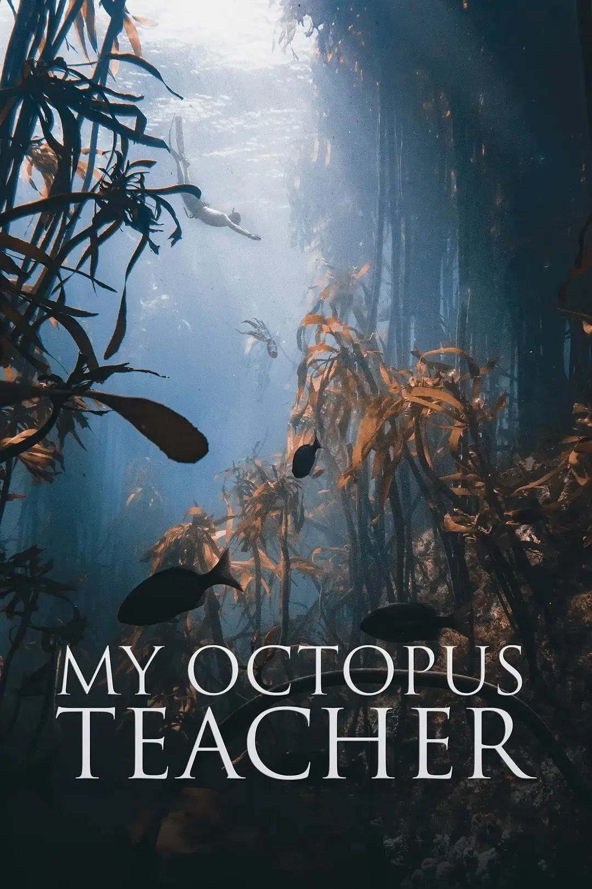
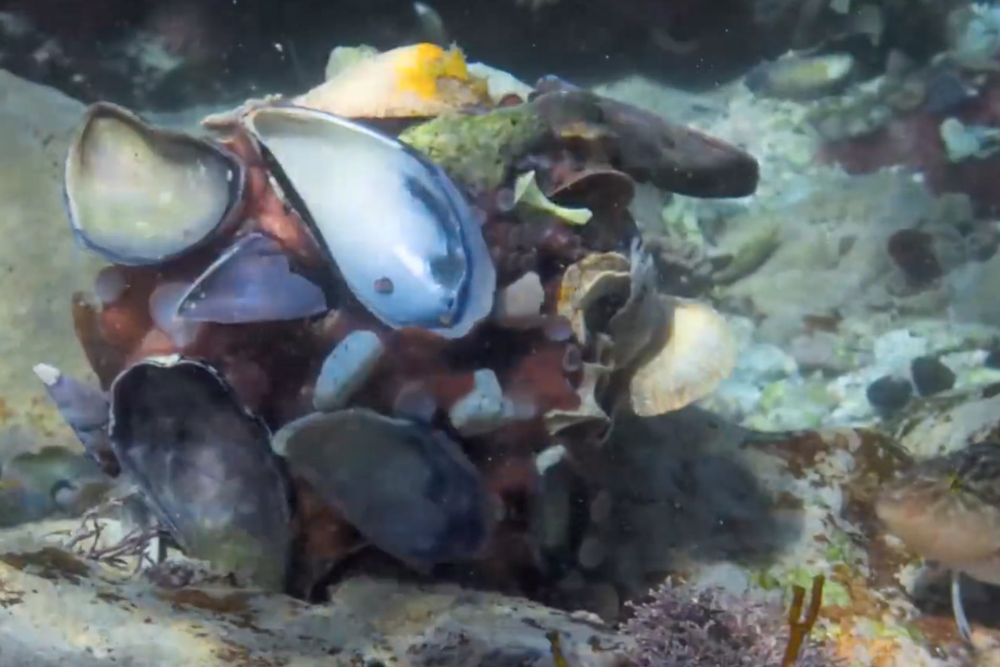
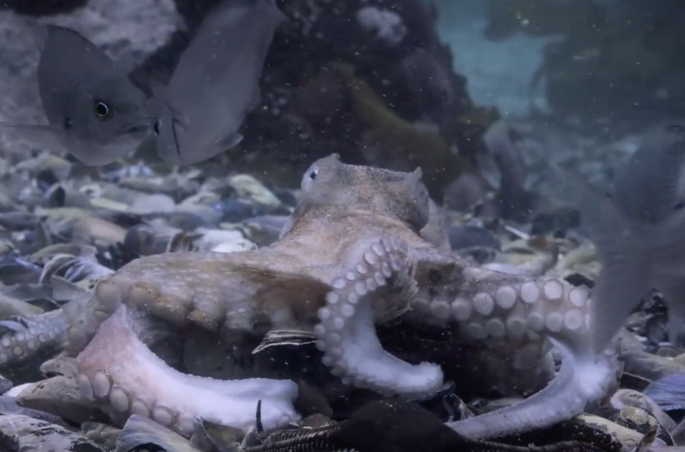

Review of "My Octopus Teacher"
It is a serendipitous surprise that I met this film, or rather, documentary, and it soon touched my heart deeply. Now, I’m eager to write this review to look back at the good time spent with it. Actually, it’s the third time I watch the documentary, but still I couldn’t hold back tears.

All it tells is about the story between the photographer and octopus. Following the protagonist Craig Foster, also the film-maker, I dive into the clear waters, weaving through lush kelp forests. It is destined to encounter that octopus and peer into her life. I’m witnessing and experience the story of love.
As an environmental protection-themed documentary, it doesn’t shows us the harsh and impressive real-world issues, such as extensive white pollution, Marine creatures entangled in fishing nets. Instead, it’s just the experience that a human come to form a special relationship with a intelligent marine creature. Craig maintains a respectful distance between humans and wildlife at the most time, ensuring minimal disturbance and leave them undisturbed. Not just limited to those two, but the relationship extend to more areas, like the family bond, or with all creatures. Behind the story lies a deeper realm of contemplative space.
Most of the time, the emotional impact it gives is mild. But it is not boring; instead, it gently narrates to you, immersing you in its story-telling and naturally capturing your heart. However, there are also moments when it makes you feel intense emotions, that feeling of powerlessness. To be more specific, there’s two event make me feel heart-broken, though I clearly know those are something bound to happen, and I shouldn’t intervene too much.
One is that a shark targeted its prey, tracing the octopus, biting her. I tell myself that this is a natural occurrence in the hunting behavior of animals, struggling to suppress the desire to rescue her. But I still couldn’t help thinking that if she is going to meet me and result in being chased by the predator. Fortunately, she is so intelligent and brave that she escaped finally.

Another is that the mating begins, just a stage of her life. The lifespan of an octopus is only 1 to 3 years in average, so after spending over a year together, the time of separation arrived. She will complete its reproductive mission at the end of life. Hatching and nurturing the next generation is timing her death. Finally, she was barely alive, and became so weak that was washed out of the den, bitten by fishes. At last, a shark carried her in mouth and swam towards misty forests. I didn’t do anything, just a heart-broken bystander.

At the begin of the documentary, Craig was torn by life, sick from pressure and couldn’t be a good father. When chasing and documenting the lives of people thriving in the wilderness, he says, “I mean, they just were inside of the natural world. And I could feel I was outside. And I had this deep longing to be inside that world.”
While near the end, he learned something from his octopus teacher. “To sense how vulnerable these wild animals’ lives are, and actually, then how vulnerable all our lives on this planet are.” “What she taught me was to feel, that you’re part of this place, not a visitor. That’s a huge difference.”
Although it had already passed away, it passed on its vitality to the next generation. In the end, Craig met the young octopuses, and he couldn’t help but wonder if they were descendants of her. This is not just a story of, but also a story about life. We can feel the vibrant vitality, the endless cycle of regeneration, and the rhythm of life.